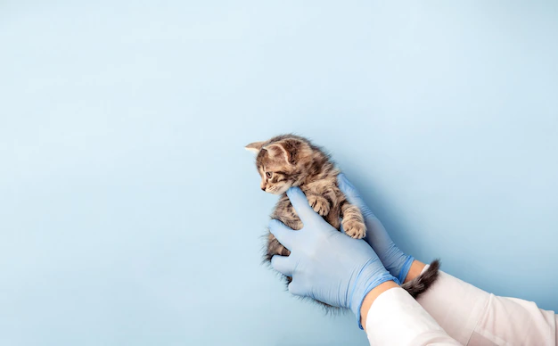

Кастрация котов
Любой владелец котов рано или поздно задумывается о целесообразности и необходимости проведения такой процедуры, как кастрация. Она представляет собой операцию, в результате которой прекращается функционирование семенников (половых желез) и выработка гормонов. Данная мера позволяет скорректировать поведение питомца, а также устранить целый ряд проблем, с которыми могут столкнуться владельцы взрослых особей.
Ветеринарная клиника «Ветклиника» предоставляет услугу по кастрации котов во Владимире.
- Данная операция проводится в стерильных условиях и только после предварительного осмотра животного, который входит в стоимость процедуры.
- Специалисты проконсультируют вас относительно питания и ухода в послеоперационный период, чтобы организм кота мог быстрее прийти в норму.
Прайс на кастрацию котов
УСЛУГА
ЦЕНА
Кастрация кота
1000 руб.
Кастрация котов-крипторхов
1800 руб.
Зачем нужна кастрация котов?
Существует множество мифов на тему гуманности и необходимости проведения кастрации котов. В пользу положительного решения о проведении операции говорят следующие аспекты:
- Существенно увеличивается продолжительность жизни питомца – кастрация продлевает жизненный срок на 2-4 года из-за снижения риска заражения половыми инфекциями или возникновения других болезней (простатит, аденома простаты, опухоль).
- Животное становится более спокойным и ласковым, как по отношению к хозяевам, так и к другим питомцам. Вы не столкнетесь с сезонными или ночными «криками».
- Из дома исчезнет неприятный запах, физиологические жидкости станут менее стойкими и пахучими. Кот перестанет метить территорию.
- Нет необходимости в постоянной покупке гормональных контрацептивов, которые часто являются причиной появления злокачественных образований у питомца.
- У кота не возникает потребности сбежать из дома или выпрыгнуть из окна для того, чтобы удовлетворить свои природные инстинкты.
Конечно, существуют и негативные моменты: поскольку останавливается выработка гормона тестостерона, то коты вырастают не такими крупными. Особи редких пород после операции по кастрации не смогут стать продолжателями рода. Также, важно соблюдать особый рацион питания и cнижать КБЖУ пищи, в противном случае животное может набрать лишний вес.
Противопоказания к кастрации
Как и любая другая операция, кастрация котов имеет свои противопоказания:
- Наличие травм половых органов
- Врожденные аномалии и наследственные патологии
- Злокачественные или доброкачественные новообразования
Противопоказания связаны главным образом с применением анестезии, а также с восстановительным периодом. Если кот ослаблен по причине какой-либо болезни или из-за возраста, то проведение операции не желательно.
Когда лучше кастрировать кота?
Специалисты клиники «Ветклиника» советуют проводить кастрацию в возрасте 7-9 месяцев. После этого срока многие питомцы уже вступают на этап половой зрелости, что заметно в изменениях поведения. Даже после проведения операции данные поведенческие факторы могут остаться.
Кастрация уже взрослой особи кота требует особого подхода, поскольку увеличивается риск возникновения осложнений. Животное исследуют на наличие аллергии или хронических заболеваний, после чего делают вывод о целесообразности процедуры. Напротив, проведение операции до 7-ми месячного возраста чревато замедлением развития скелета и мышечной ткани.
Как подготовить кота к кастрации
Чтобы избежать возможных рисков и осложнений, необходимо соблюсти подготовительные меры:
- За 12 часов до операции не следует давать питомцу еду, чтобы избежать появления тошноты или образования рвотных масс. Также за 1-2 часа нельзя пить жидкость.
- Следует положить в переноску одеяло, одежду владельца или любую другую вещь со знакомым запахом, чтобы животное успокоилось.
- Прийти в клинику в назначенное время, чтобы сократить ожидание и стрессовый период.
- Стоит ли говорить, что обязательно следует соблюдать календарь прививок, а также провести дегельминтизацию с учетом рекомендаций ветеринарного врача.
Послеоперационный уход
Уход за кастрированным котом включает в себя необходимые меры:
- Обеспечить питомцу просторное и теплое место, в сухости и чистоте, без выхода на улицу. Лучше расположить кота на полу, поскольку в период выхода из наркоза неустойчивость походки и слабость в тазовых конечностях могут стать причиной падений.
- На случай неконтролируемого мочеиспускания следует подложить одноразовую сухую пеленку и менять ее по мере необходимости.
- Освещение должно быть приглушенным, чтобы избежать неприятных ощущений в глазах.
- Кормить кота после операции следует мягкой пищей без кусков, также обеспечить доступ к теплой воде. Еду давать можно на второй день, а жидкость не раньше, чем через 4 часа.
- При пониженной температуре воздуха обеспечить комфорт – положить грелку, плед, включить обогреватель и др.
- Нужно следить за ранкой, незначительное намокание считается нормой, но, если крови много, надо обратиться к ветеринару. Не позволяйте питомцу вылизывать ранку, а также следить, чтобы в нее не попал наполнитель.
- После операции коту нужно оказать помощь в совершении первого похода в туалет, отнести в лоток и придержать при проявлении слабости.
При соблюдении всех рекомендаций возникновение осложнений практически невозможно и уже через короткое время питомец восстановится.
Как записаться на кастрацию кота
Ветеринарная клиника «Ветклиника» во Владимире будет рада принять вас и вашего питомца, чтобы провести кастрацию кота быстро и профессионально. Мы гарантируем доступные цены и ласковое обращение с вашими любимцами.
Звоните по телефону +7 (999) 999-99-99


или